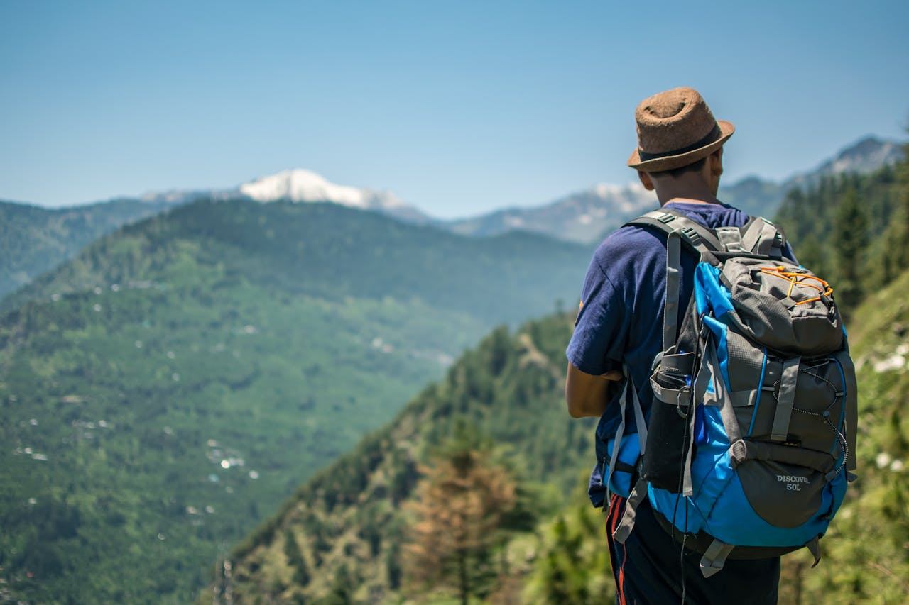

Preparación
Qué llevar en la mochila del Camino de Santiago: lista completa 2025
Una mochila mal preparada puede arruinar tu Camino. La lista definitiva: ropa técnica, calzado, botiquín y lo que definitivamente no necesitas llevar.